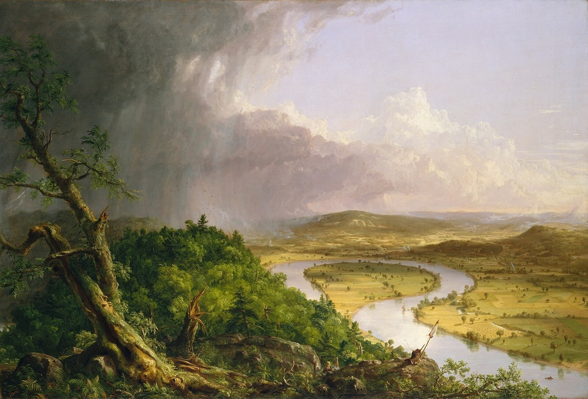
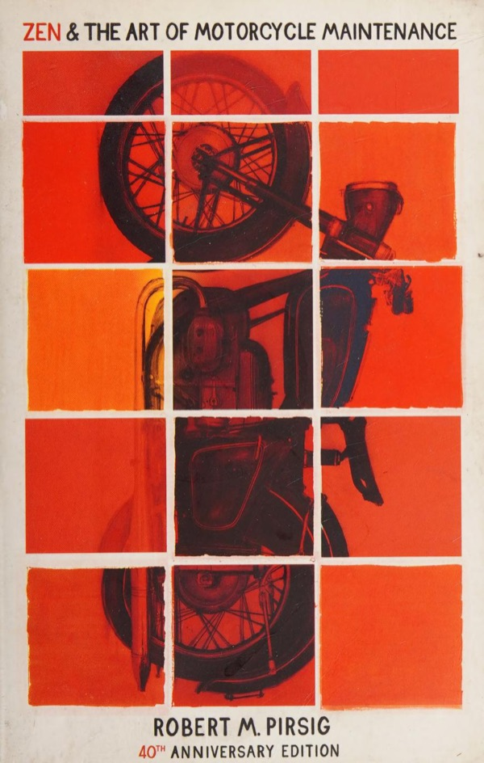
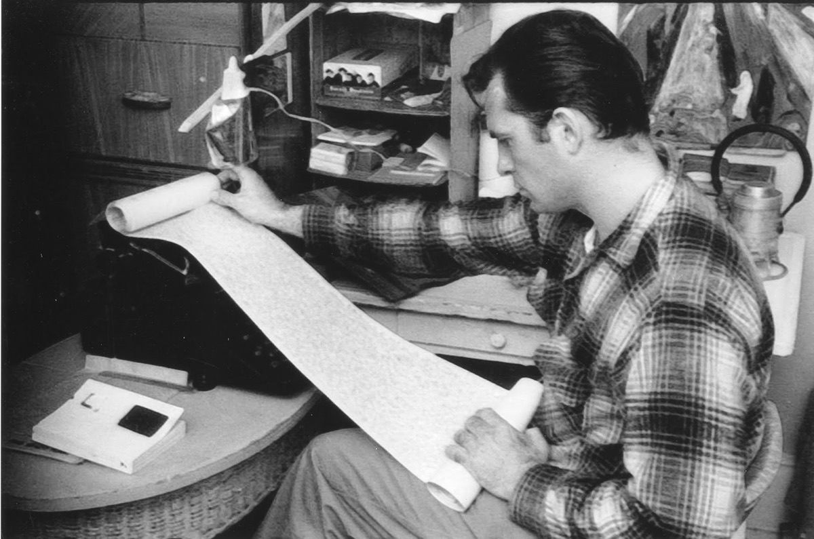
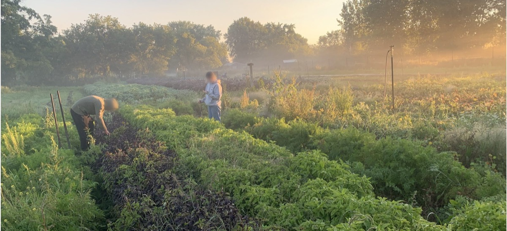
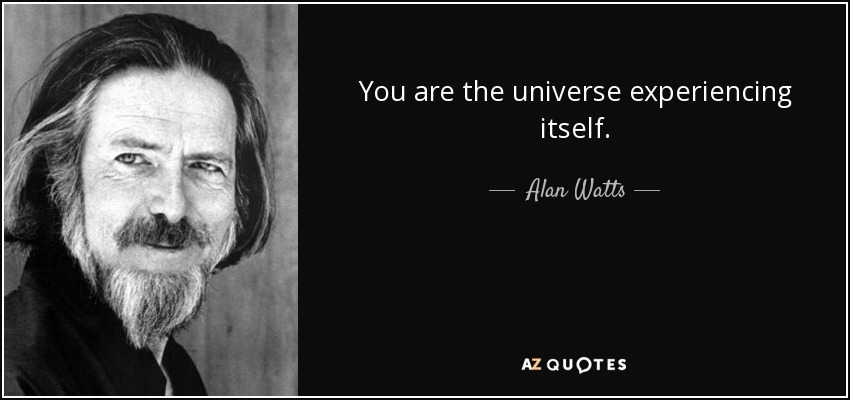

Context Driven Development
I built a Django app for a good friend running a local farm. I hit every hurdle and pain point. It was easy to build but I built the wrong thing many times. It forced me to get better at interviews and to fill different roles: product owner and designer. It seems silly in 20/20 hindsight that I dove into the details of how their operation worked without understanding the people who worked there (even though I had worked alongside them in the past!). The who, what, when, where and why were inferred while I failed to grasp the how.
Out of that came Context Driven Development (CDD). It's a heavenly high level language to build products (an app, a business, your life). Sounds cool but what does that mean? It might be easier to describe it simply as a tool that hands you a nicely bundled context that humans and agents can read to deliver a product. This context has about three levels of hierarchy: philosophy, behavior, and decisions. It is docs, design, architecture, a test-driven plan, business logic (separate from code), user feedback, tickets, retros, UI copy, release strategy and a product roadmap in a handful of short markdown docs, some living and some throwaway.
The goal of CDD is to capture the entirety of context in written language up until a boundary named “Experience”. It borrows from BDD (behavior-driven development) and stands on the shoulders of Gherkin syntax. I believe CDD can bring all roles of product development closer to raw experience through human senses. I also believe we need to define our methodology for development as its own product alongside the apps we are building so agents can assist in the best way they can.

Thomas Cole, The Oxbow, 1836. The Metropolitan Museum of Art, public domain
Rather read it as an emotionless utilitarian? See my implementation here. The skills are examples, not templates. Throw them away and make your own.
I want to follow the philosophy of CDD in this article and hand off some context for you to read. So where do we start? Unfortunately, at the beginning. We all stand on the shoulders of other people, tools, or ideas. We should at least agree on what that means before continuing. I want to show you how CDD can get you from point A to point B on a map but we need to understand forms and vocabulary for our journey. We can start with one of the five W’s… What! Yes this is something I learned as a seven-year-old but it really is the foundation of CDD.
I keep six honest serving-men
(They taught me all I knew);
Their names are What and Why and When
And How and Where and Who.
Rudyard Kipling, Just So Stories, 1902
Context
What is it? It's synonymous with one's environment or spacetime. You are experiencing some resemblance of context as we speak.
“It is Nov 9 2026 at 10:38am and I am drafting an article of the wiggly world defined with CDD at my desk while occasionally peering outside at the frostbitten grass.”
It really is that simple: it's your “space” in an event of “time”. We all understand this as a core foundation of our personality. It is something we sense by seeing, touching, hearing, tasting, and smelling. Our data stream of senses comes together to build a world we “experience” through a sixth sense. Call it awareness, or our third eye. We gather feedback from the world and make decisions based on our philosophies and behavior in familiar scenarios. I want to go a step deeper because I used a tool to convey that context to you… language!
Language
This is the root of context and every two- or three-year-old gets it. Language is our tool to communicate context across time (past, present, future) in an elegant fashion. It's used to document history, journal one's thoughts and plan for the future. Some people are great at using language and writing while others are not. So language is a tool that has a certain “Quality”.

Cover scan via Internet Archive
Some books are better than others, no doubt. Some people use language so well they communicate their feelings and love beyond the language barrier. We all admire the songs and artists who do this.
Experience
I alluded to it earlier but what is it? It's the present moment. It's all your senses coming together to build a context out of the wiggly, undefined world that surrounds us. We separate ourselves and everything else is mixed in. Rarely do we fully experience the present moment because of our anxieties to plan and review our lives. So again it's spacetime bundled up nicely in a context for us humans to brew some coffee or hunt some prey. We attempt to communicate this with language.
We only communicate with LLMs (large language models) through language but that's not entirely how humans communicate.
Humans feel and sense in mysterious ways and that’s our niche in the new evolving ecosystem of AI. Humans experience and use language as an artifact to bridge spacetime. We can then Plan (future), Deliver (present) and Learn (past). We want to know where we are going, what we are doing, and what we did. Experience is something we can’t quite define and humans “feel” a certain amount of “quality” in things. This is the system boundary of CDD and where it begins… after language.
So what is CDD exactly?
As defined by Opus: “How a small team of people and agents turn a customer's feedback into a plan that delivers software and learns from each cycle.”
Why and who is this for?
Make your team's workflow something agents can run and people can read, so the work goes to plan with no surprises. The unattainable goal is a plan with no misses. Its uses are endless. Your business logic is now separated from your code which makes throwing away an entire app easy. The foundations and design stay the same while your architecture changes. It’s everything you care about as someone who delivers a product from general philosophy to tests no matter your role (C-suite to customer).
When and where?
Adopt it personally and see if you can find a version that fits your team. As a developer, I find myself contemplating foundations and design more now than ever and it's inspiring. Start small: perhaps your cycle is every ticket and you take a kanban approach to building up the context of your systems. Start at the foundations and do it today! They most likely already exist at your company, so ask around. Build your workflow with CDD and also build your product.

Jack Kerouac’s On the Road scroll. Image via lineassobrearte.com
How does it work?
I recommend throwing away all the skills from the repo and starting fresh with how you work. They are an example of how I worked wearing many different hats. Start fresh and keep the forms and foundations the same. Use Claude Code, Pi, or Copilot as your harness. Choose your own adventure. It's a decision in architecture and it's a form that's easily thrown away. Establish some principles that fit you as an individual. There are so many in the world already. Capture the ones you feel closest to as our agents can't do this. Fill the niche.
Don’t wade against the stream. Start with foundations and design, then architecture and decisions. Building the other way around is costly. I’ve made this mistake too many times as a techy dev.
What’s next?
I hope you enjoyed the journey together and find a need for it. We are building apps that serve as tools for real people to experience. Our experience (the present moment) is our most precious resource. Start experiencing alongside your clients. For me that’s getting out in the field and harvesting veggies.

Start writing more, any kind of writing, like a musician who can pick up any instrument. Start experiencing more by connecting with your community or the community of nature. Follow Steve Rinella’s “how” to enjoy the outdoors (hike, garden, camp, forage, fish, and hunt).
If you're a developer, I hope you feel inspired to move your writing from concrete code to the wiggly world of experience. You already are a writer and an artist; let it flow more naturally downstream. Enjoy the ebb and flow of product development. Embrace agentic development with your heart open and show compassion for those who can't feel experience. Use it to write a love letter to your clients and stop worrying about the “how”. Emerge from the shackles and shadows of Plato’s cave and join the living. Don’t build an app for yourself; build one for a local small company and feel the gratitude and generosity of doing good. We can build more agentically and we have the tools to do it. Open source your work and let others personalize it.

Resources
Read more and write more.
- Zen and the Art of Motorcycle Maintenance, Robert M. Pirsig
- A World Appears: A Journey into Consciousness, Michael Pollan
- Anything by Robin Wall Kimmerer, especially The Serviceberry
- Lectures by Alan Watts